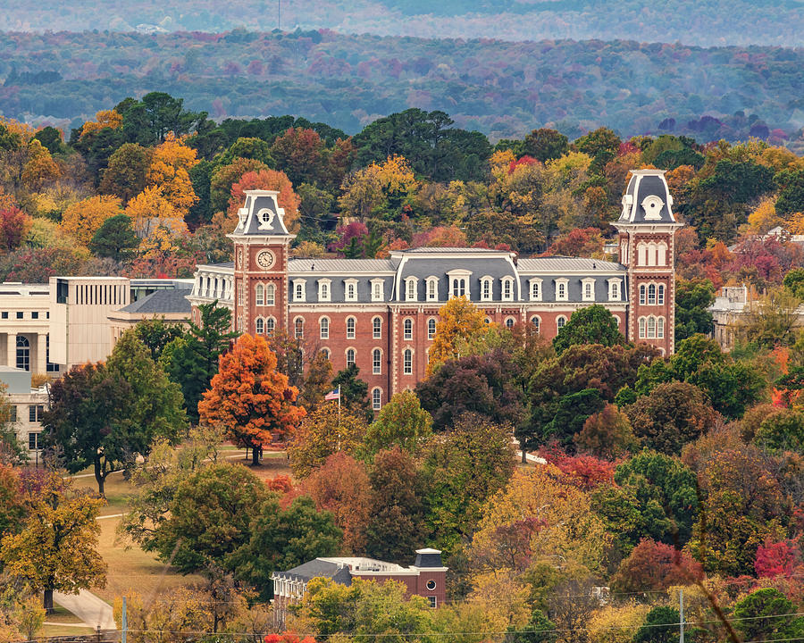

Welcome to My Fan Page for Fayetteville, Arkansas!
Nestled in the Ozark Mountains in the Northwest region of Arkansas is one of my favorite places in the world — Fayetteville. It's a college town of almost 80,000 and where I spent my undergraduate career. It's regularly ranked as one of the best places to live in the U.S. and it's understandable. It's home to some great people, businesses and only a short trip away from places like Tulsa and Oklahoma City. And if you're up for a little more of a drive Dallas, St. Louis and Kansas City are all under six hours away.
Fayetteville is home to the University of Arkansas, my alma mater and home of the Arkansas Razorbacks. While the football team is known for being the Heartbreak Hogs, most other sports at the UofA are top tier. If sports aren't your thing, Fayetteville is a hub for locally owned coffee shops and breweries. You could try a new one each day for at least two weeks before you ran out. There's an incredible trail system called the Razorback Greenway that flows throughout the city and connects it to surroundings areas. There's also great hiking in the area. For those looking for something a little less outdoorsy, Crystal Bridges Museum of Art is only 20 minutes away in Bentonville — the home of several Fortune 500 companies including the Walmart home offices.
Here are a few of my favorite places to visit when I'm back in Fayetteville. There truly is a little something for everyone.
Block Street Records- A locally owned record shop with a great selection and even greater vibes located in the beautiful Fayetteville Square.
Hammontree's- A gourmet grilled cheese shop with out of this world sandwiches and some great decor, including a pterodactyl hanging from the cieling.
Fayetteville's Funky Flea Market- It's exactly what it sounds like. A super funky indoor flea market full of just about everything you could ever want.
Dickson Street- This is Fayetteville's bar street and home to some great shops in addition to great bars like JJ's and Dickson Street Pub. There's Yancy's Hot Dog stand for the late night alchol induced munchies, Dickson Street Bookshop where you could literally wander for hours on the hunt for the perfect book, Puritan which serves coffee, beer and has a great trivia night as well as so much more.